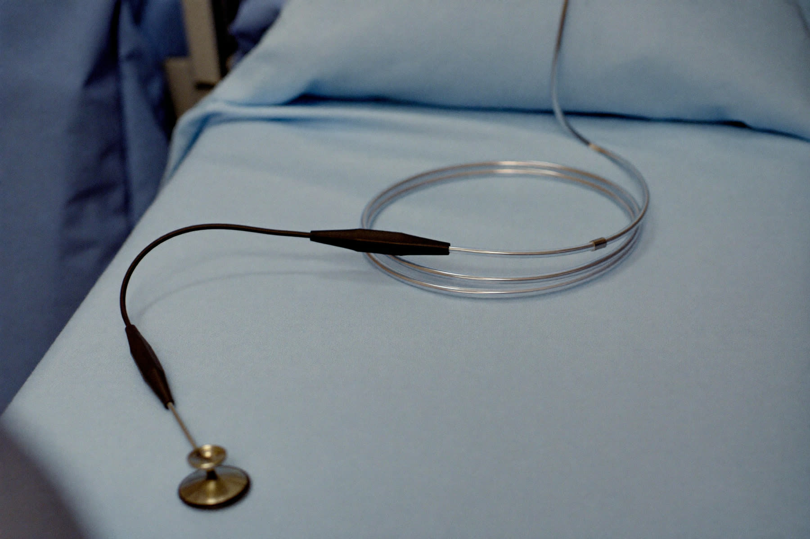
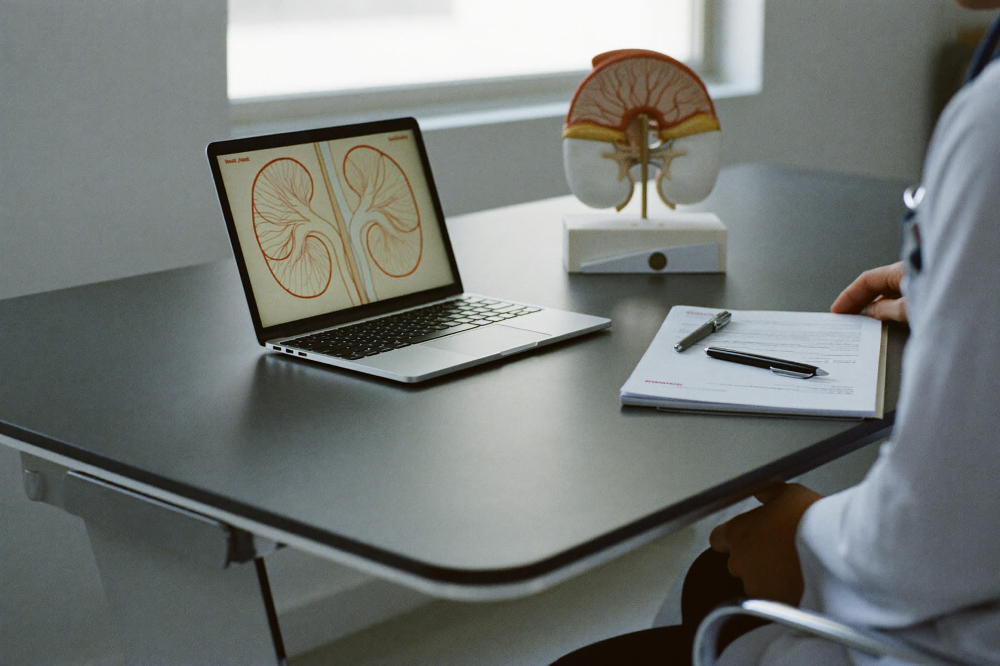
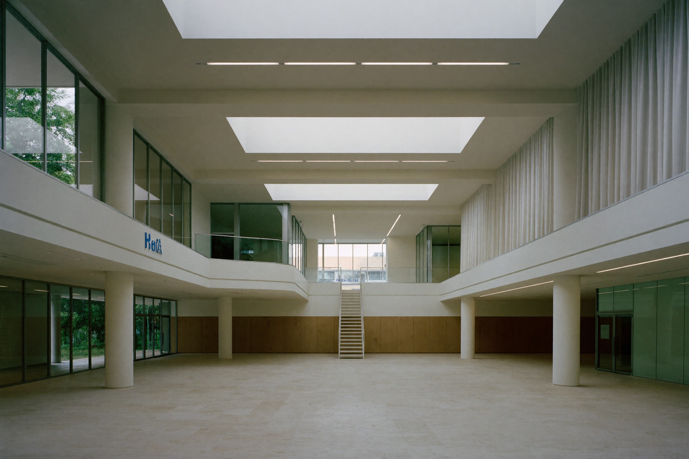

Prostat Hastalıkları3 rehber
Prostat büyümesi, işeme şikâyetleri ve HoLEP başta olmak üzere tedavi seçenekleri.
Prof. Dr.
Prostat hastalıkları, ürolojik kanserler ve kapalı cerrahi.

Altı alanda 24 tedavi ve hastalık rehberi. Her rehber hekim tarafından yazılır ve güncel kılavuzlara dayanır.
Prostat büyümesi, işeme şikâyetleri ve HoLEP başta olmak üzere tedavi seçenekleri.
Prostat, böbrek, mesane, testis ve böbreküstü bezi tümörlerinde tanı ve cerrahi tedavi.
Taşın boyutu ve yerine göre ilaç, şok dalgası ve kapalı lazer yöntemleri; yeniden oluşumu önleme.
Karında büyük kesi açmadan, küçük deliklerden kamerayla yapılan ürolojik ameliyatlar.
Kadın ve erkekte idrar kaçırma, aşırı aktif mesane ve gece idrara kalkma.
İnmemiş testis, hipospadias, reflü ve gece altını ıslatma gibi çocukluk çağı sorunları.

Büyümüş prostat dokusunun holmiyum lazerle, karında kesi açmadan çıkarıldığı kapalı ameliyat. Avrupa Üroloji Derneği kılavuzu yöntemi prostat hacminden bağımsız seçenekler arasında sayar.
Laparoskopik ürolojik cerrahi, taş hastalığı ve ürolojik onkoloji üzerine ulusal ve uluslararası yayınlar.
Kaynak: YÖK Akademik ve Google Scholar, Ekim 2026.

Muayeneye nasıl hazırlanılır, ameliyat öncesinde ve sonrasında nelere dikkat edilir? Raporlardaki terimler ne anlama gelir?
